All work
Claritea
Design and front-end · Personal product
Claritea treats reading as nervous-system care, not a catalog or a streak contest. I designed and built it: sessions tied to heart rate (HealthKit / Health Connect), turned into a Focus Score — how the reading landed in the body, not how many books you owed the year.

The problem
Most reading apps still optimize for shelves, ratings, and yearly challenges. Wellness apps track meditation and sleep—but leave reading out. For ADHD readers especially, volume-based gamification often makes the guilt worse.
I interviewed aspirational readers, ADHD readers, and people who already use Calm-style tools. Proof motivated more than advice. Seeing a calm signal after a session made the value feel real.
I mapped the competitors: Bookly and Basmo count minutes; Fable and Goodreads do community; wellness apps ignore books. Nothing sat at session tracking + biometric wellness + ADHD-first UX.
What I made
Design principles I used as a filter: reading as self-care, not homework; ADHD-first as universal design; show the body’s response instead of lecturing; intimate social over broadcast.
I prototyped the core loop in HTML, then implemented production front-end in React Native (Expo) with a shared Supabase backend and a SwiftUI Mac companion. This isn’t only screens.
The loop is simple: open a book → start a Focus Session → optional ADHD check-ins → end session → Focus Score. Founder-built and production-ready — not an App Store launch with invented engagement numbers.
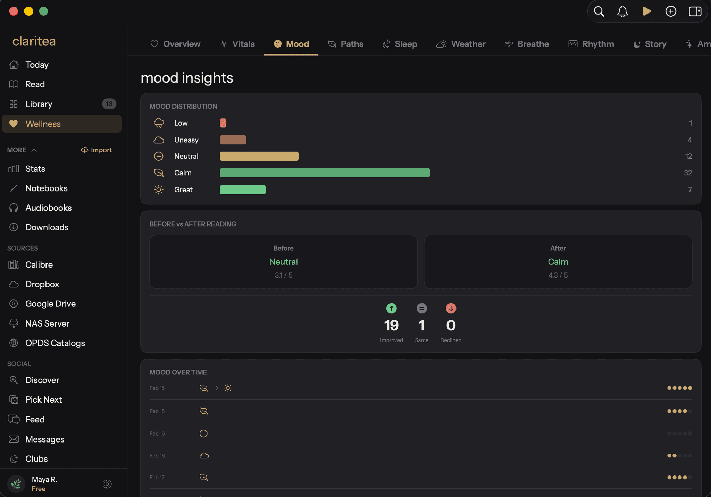
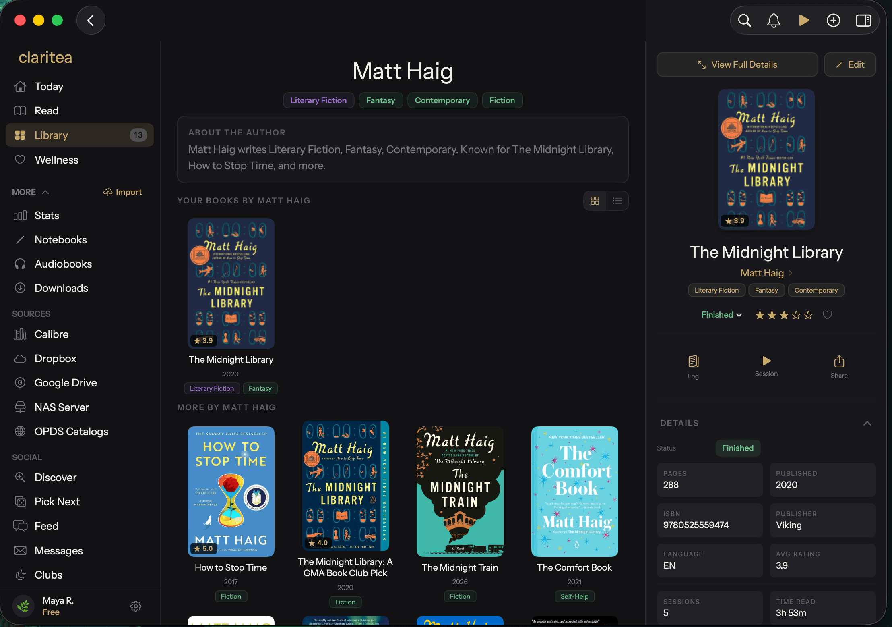
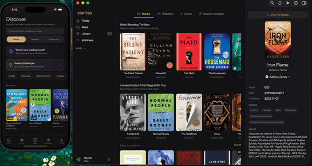
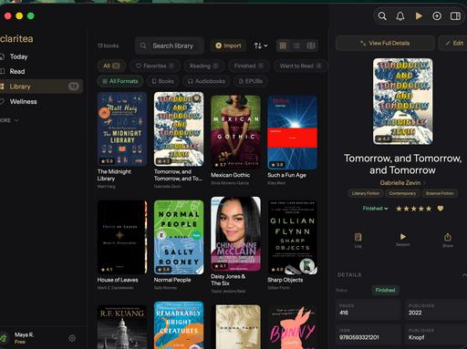
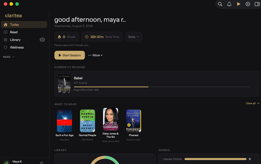
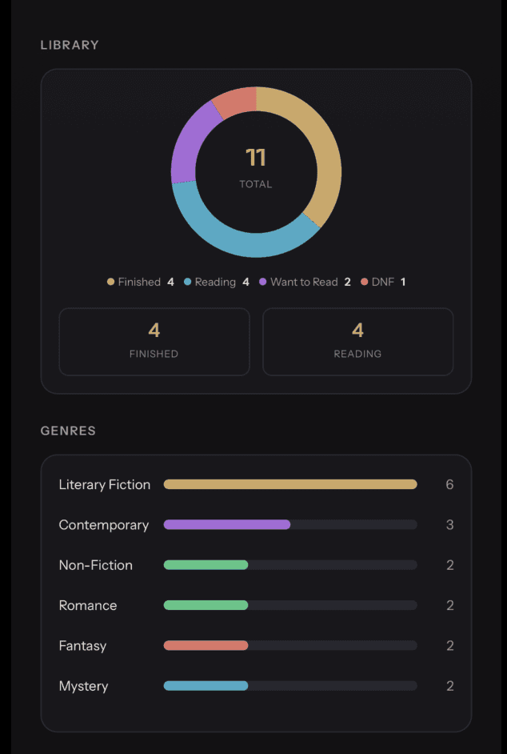
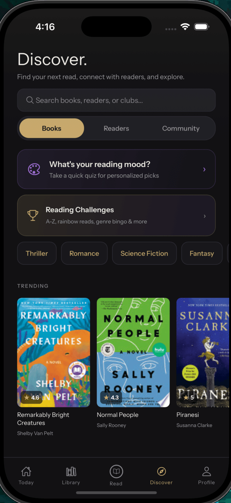
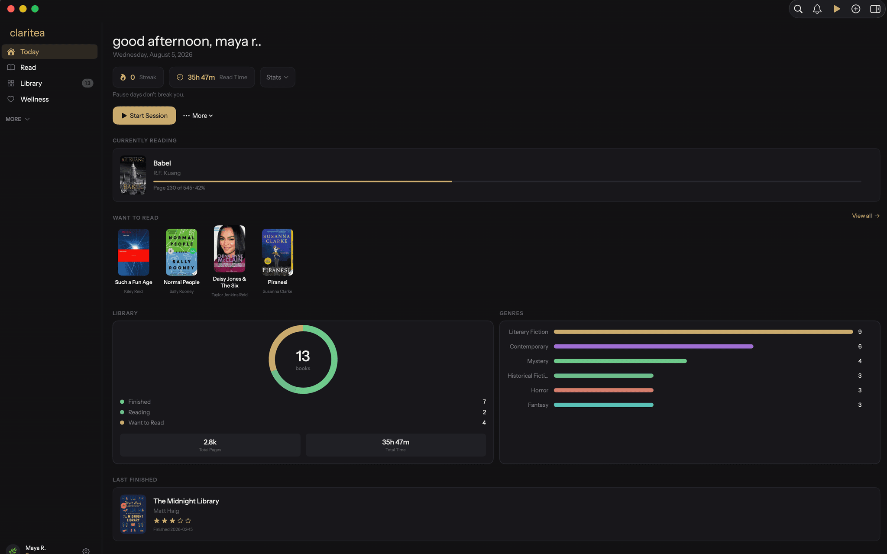
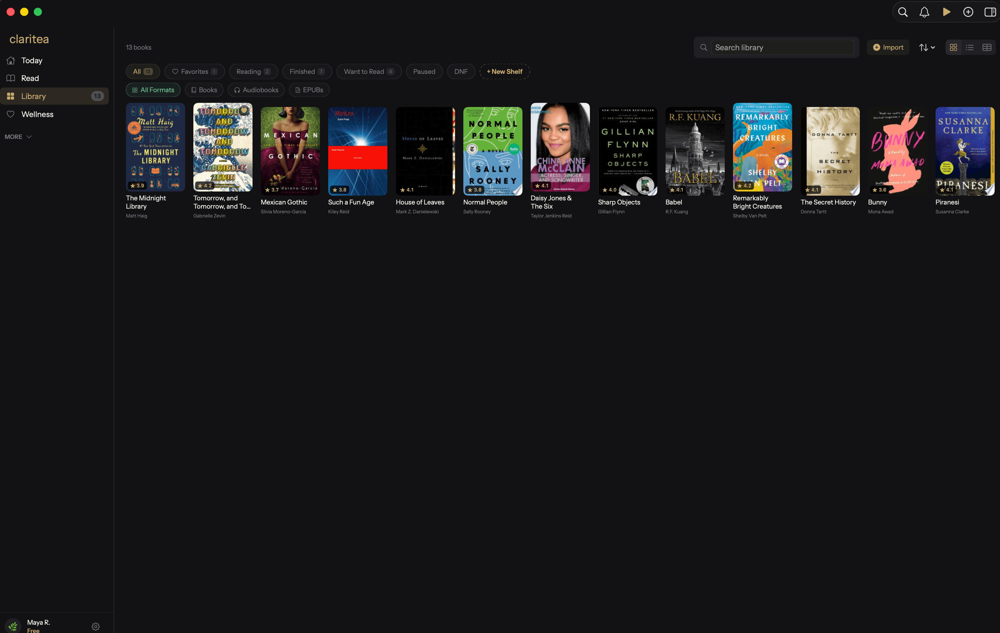
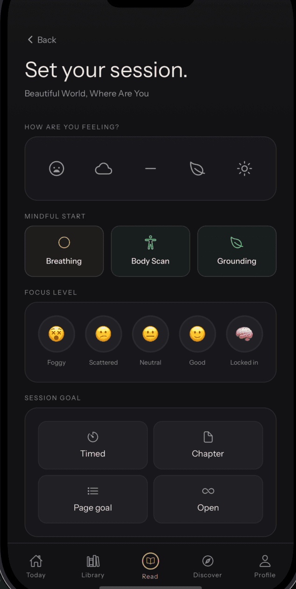
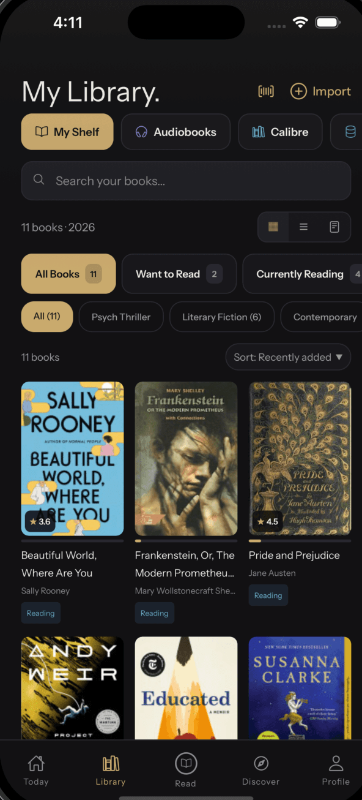
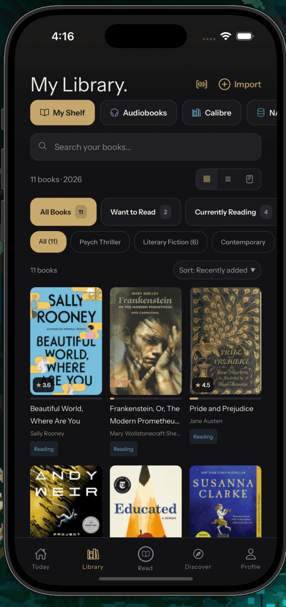
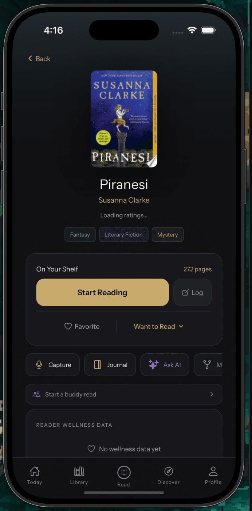